| scheduled_departure | scheduled_arrival | carrier | origin | destination | distance_km | weather_wind1 | weather_wind2 | weather_rain1 | weather_rain2 | noise_1 | noise_2 | noise_3 | scheduled_duration_min | actual_departure | actual_arrival | |
|---|---|---|---|---|---|---|---|---|---|---|---|---|---|---|---|---|
| 0 | 2025-02-02 04:15:00 | 2025-02-02 06:03:00 | UA | ATL | SFO | 918 | 4.76 | 5.09 | 0.56 | 0.00 | 0.4405 | 0.2071 | 83 | 108 | 2025-02-02 04:39:00 | 2025-02-02 06:45:00 |
| 1 | 2025-10-10 00:10:00 | 2025-10-10 03:11:00 | AA | JFK | LAX | 1826 | 26.43 | 26.82 | 0.84 | 0.00 | 1.8638 | 0.7937 | 27 | 181 | 2025-10-10 00:06:00 | 2025-10-10 03:10:00 |
| 2 | 2025-08-27 15:30:00 | 2025-08-27 19:18:00 | B6 | JFK | BOS | 2409 | 2.80 | 0.83 | 13.91 | 12.32 | 1.1118 | -0.6341 | 29 | 228 | 2025-08-27 16:23:00 | 2025-08-27 20:40:00 |
From Domain Features to Automated Feature Selection
Data-Centric AI (Module II)
Matteo Francia
DISI — University of Bologna
m.francia@unibo.it
DISI — University of Bologna
m.francia@unibo.it

Session plan: theory and coding
| Activity |
|---|
| Theory 1: Data understanding, leakage, and manual feature engineering |
| Coding 1 (~15 min): Exercises 1-2 |
| Theory 2: Variance, correlation, and univariate feature filters |
| Coding 2 (~15 min): Exercises 3-4 |
| Theory 3: Wrappers, model comparisons, selection stability, and interpretation |
| Coding 3 (~15 min): Exercises 5-6 |
Feature engineering versus feature selection
Feature engineering creates inputs using knowledge of the problem.
- It turns domain knowledge into measurable variables: ratios, differences, nonlinear transformations, and aggregations.
Feature selection controls complexity by choosing a subset of candidate inputs.
- It tries to keep signal while removing redundancy, noise, and sources of overfitting.
A feature is useful when:
- It carries signal about the target.
- It is not just a duplicate of another feature.
- It is stable across samples, folds, and time periods.
- It is available at the moment the model is used.
Flight delay prediction: predict whether a flight arrives at least 15 minutes late
Data understanding
<class 'pandas.DataFrame'>
RangeIndex: 5000 entries, 0 to 4999
Data columns (total 16 columns):
# Column Non-Null Count Dtype
--- ------ -------------- -----
0 scheduled_departure 5000 non-null datetime64[us]
1 scheduled_arrival 5000 non-null datetime64[us]
2 carrier 5000 non-null str
3 origin 5000 non-null str
4 destination 5000 non-null str
5 distance_km 5000 non-null int64
6 weather_wind1 5000 non-null float64
7 weather_wind2 5000 non-null float64
8 weather_rain1 5000 non-null float64
9 weather_rain2 5000 non-null float64
10 noise_1 5000 non-null float64
11 noise_2 5000 non-null float64
12 noise_3 5000 non-null int64
13 scheduled_duration_min 5000 non-null int64
14 actual_departure 5000 non-null datetime64[us]
15 actual_arrival 5000 non-null datetime64[us]
dtypes: datetime64[us](4), float64(6), int64(3), str(3)
memory usage: 625.1 KBRedundant features and irrelevant noise
- The two rain forecasts carry the same information.
- A rain forecast is somewhat correlated with the target, but it is not a perfect predictor.
- An independent noise column has similar distributions in the two classes.
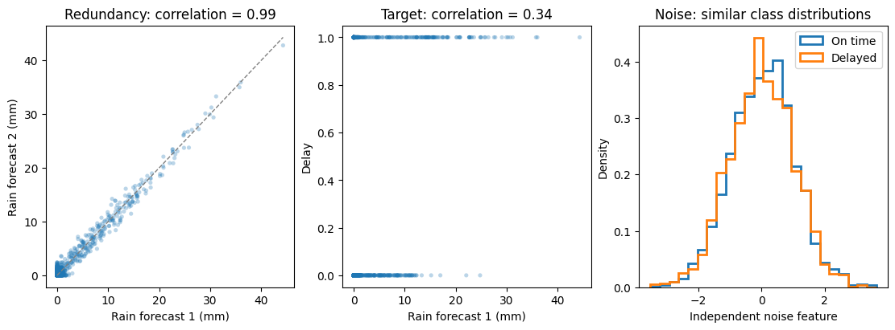
Figure 1
Is there any reason to discard a feature before training a model?
- IDs. Why?
- Dates. Why?
- Sensitive information. Why?
- Features that are not available at prediction time. Why?
- …
Manual feature engineering
Create features from scheduled times and airport codes:
departure_hour,day_of_week,month,is_holiday: scheduled date/time decomposition.airport_*: fixed airport-presence indicators for airports appearing in either origin or destination.- Other?
| scheduled_departure | |
|---|---|
| 0 | 2025-02-02 04:15:00 |
| 1 | 2025-10-10 00:10:00 |
| 2 | 2025-08-27 15:30:00 |
Add domain features to reveal patterns
Code
| scheduled_departure | departure_hour | is_holiday | is_late_night | delayed_15_min | |
|---|---|---|---|---|---|
| 0 | 2025-02-02 04:15:00 | 4 | 1 | 1 | 1 |
| 1 | 2025-10-10 00:10:00 | 0 | 0 | 1 | 0 |
| 2 | 2025-08-27 15:30:00 | 15 | 0 | 0 | 1 |
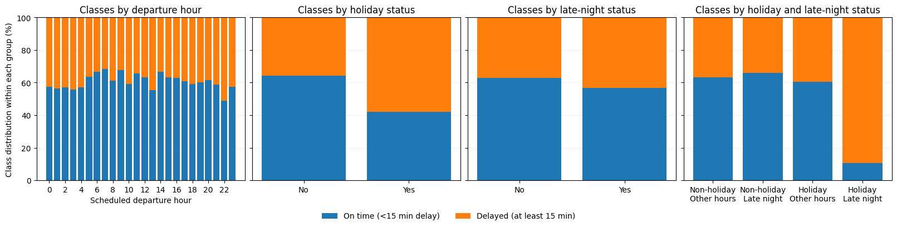
Figure 2
Data understanding and visualization
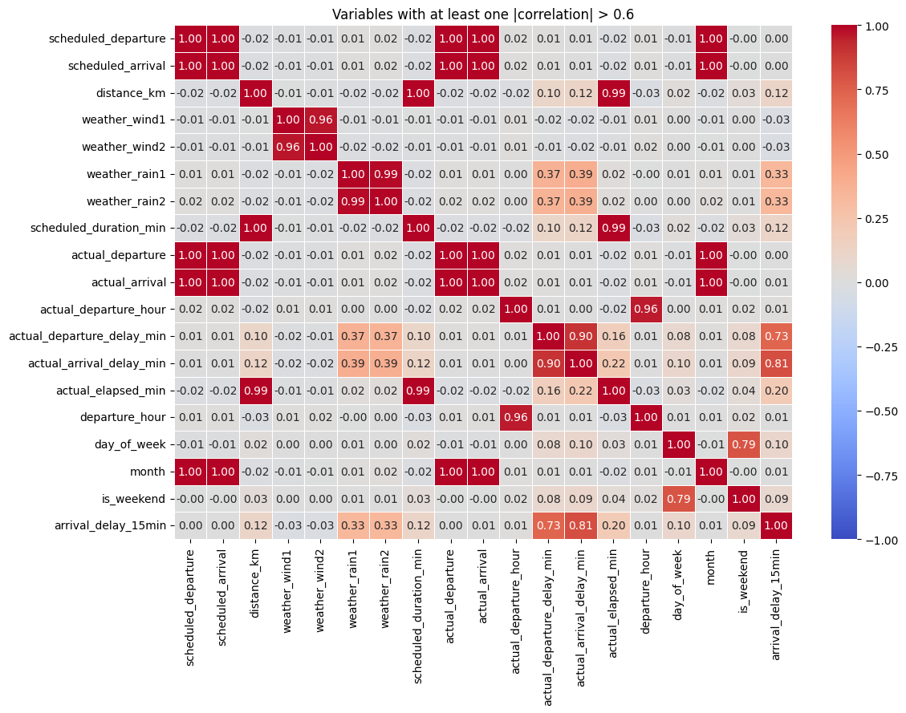
Are features known at prediction time?
| feature | dtype | source | availability | |
|---|---|---|---|---|
| 0 | scheduled_departure | datetime64[us] | raw | before departure |
| 1 | scheduled_arrival | datetime64[us] | raw | before departure |
| 2 | carrier | str | raw | before departure |
| 3 | origin | str | raw | before departure |
| 4 | destination | str | raw | before departure |
| 5 | distance_km | int64 | raw | before departure |
| 6 | weather_wind1 | float64 | raw | before departure |
| 7 | weather_wind2 | float64 | raw | before departure |
| 8 | weather_rain1 | float64 | raw | before departure |
| 9 | weather_rain2 | float64 | raw | before departure |
| 10 | noise_1 | float64 | raw | before departure |
| 11 | noise_2 | float64 | raw | before departure |
| 12 | noise_3 | int64 | raw | before departure |
| 13 | scheduled_duration_min | int64 | raw | before departure |
| 14 | actual_departure | datetime64[us] | raw | after departure |
| 15 | actual_arrival | datetime64[us] | raw | after arrival |
Are features known at prediction time?
| feature | dtype | source | availability | |
|---|---|---|---|---|
| 21 | departure_hour | int32 | engineered | before departure |
| 22 | day_of_week | int32 | engineered | before departure |
| 23 | month | int32 | engineered | before departure |
| 24 | is_weekend | int64 | engineered | before departure |
| 25 | is_holiday | int64 | engineered | before departure |
| 26 | airport_ATL | int64 | engineered | before departure |
| 27 | airport_BOS | int64 | engineered | before departure |
| 28 | airport_JFK | int64 | engineered | before departure |
| 29 | airport_LAX | int64 | engineered | before departure |
| 30 | airport_SFO | int64 | engineered | before departure |
| 16 | actual_departure_hour | int32 | engineered | after departure |
| 18 | actual_departure_delay_min | float64 | engineered | after departure |
| 17 | actual_arrival_hour | int32 | engineered | after arrival |
| 19 | actual_arrival_delay_min | float64 | engineered | after arrival |
| 20 | actual_elapsed_min | float64 | engineered | after arrival |
Pipeline generation
Pipeline(steps=[('feature_engineering',
FlightFeatureEngineer(add_manual_features=False)),
('preprocessing',
ColumnTransformer(transformers=[('num', 'passthrough',
<sklearn.compose._column_transformer.make_column_selector object at 0x7b1e498cda90>),
('cat',
OneHotEncoder(handle_unknown='ignore',
sparse_output=False),
<sklearn.compose._column_transformer.make_column_selector object at 0x7b1e49272c10>)],
verbose_feature_names_out=False)),
('classifier',
DecisionTreeClassifier(class_weight='balanced', max_depth=5,
random_state=42))])In a Jupyter environment, please rerun this cell to show the HTML representation or trust the notebook. On GitHub, the HTML representation is unable to render, please try loading this page with nbviewer.org.
Parameters
Parameters
| add_manual_features | False | |
| include_actual_times | False | |
| drop_datetime | True |
Parameters
<sklearn.compose._column_transformer.make_column_selector object at 0x7b1e498cda90>
passthrough
<sklearn.compose._column_transformer.make_column_selector object at 0x7b1e49272c10>
Parameters
Parameters
New information available at each event
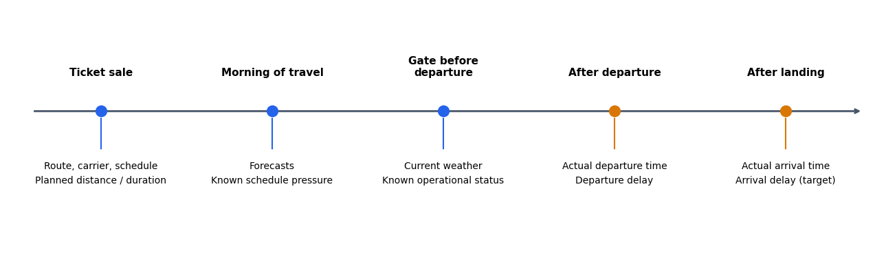
| experiment | balanced_accuracy_mean | f1_mean | |
|---|---|---|---|
| 0 | Raw data - no feature engineering | 0.757657 | 0.702503 |
| 1 | Feature engineering | 0.790393 | 0.745900 |
| 2 | Leaky feature engineering | 1.000000 | 1.000000 |
Coding break 1: Exercises 1-2 (~15 minutes)
Run the setup, then implement Exercises 1-2.
Automated feature selection
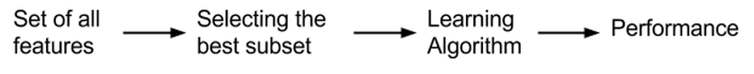
Filter Methods
Filter methods rank features using a statistical criterion independent of the final model (Guyon and Elisseeff 2003).
- Filter methods are usually faster. Why?
- Variance and correlation filters inspect features without using the target.
- We then use mutual information with
SelectKBest.
Filter: low variance
VarianceThreshold removes features that vary too little in the training data.
from sklearn.feature_selection import VarianceThreshold
variance_filter = VarianceThreshold(threshold=0.01)threshold: discard features with training variance less than or equal to this value; the default0.0removes constants.- No target
yis needed. - Variance depends on units: do not first scale every feature to unit variance.
Variance: constant, nearly constant, or varying?
These synthetic features have the same units and mean, but different spreads.
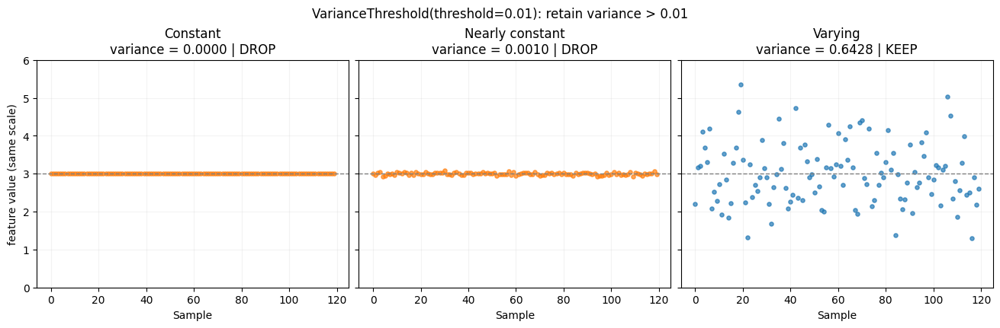
Variance filter: inspect the removals
Input features: 34; retained: 34 (threshold=0.01).| training_variance | retained | |
|---|---|---|
| is_holiday | 0.1375 | True |
| origin_SFO | 0.1532 | True |
| destination_ATL | 0.1557 | True |
| carrier_B6 | 0.1562 | True |
| carrier_DL | 0.1574 | True |
Filter: high correlation
DropCorrelatedFeatures removes redundant numeric features.
from feature_engine.selection import DropCorrelatedFeatures
correlation_filter = DropCorrelatedFeatures(
variables=None, method="pearson", threshold=0.9,
)method="pearson": measure linear correlation;"spearman"uses ranks.threshold=0.9: remove a feature if its absolute correlation with a retained one exceeds 0.9; the default is 0.8.
Correlation: both positive and negative redundancy
- Keep reference A; compare three other synthetic features with it.
- At
threshold=0.9, B and C are removed because \(|r| > 0.9\); D survives. - A weak Pearson correlation does not rule out nonlinear dependence.
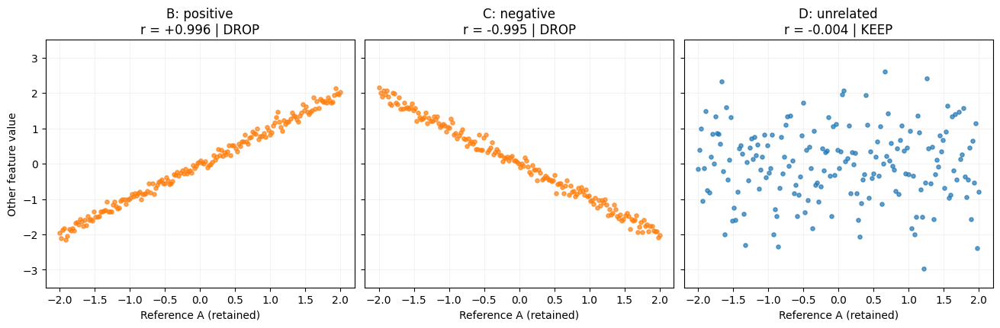
Correlation filter: inspect the redundant pairs
Input features: 34; removed: 3 (threshold=0.9).| retained | removed | absolute_correlation | |
|---|---|---|---|
| 0 | distance_km | scheduled_duration_min | 1.000 |
| 1 | weather_rain1 | weather_rain2 | 0.989 |
| 2 | weather_wind1 | weather_wind2 | 0.964 |
Filter: SelectKBest
SelectKBest ranks features by score_func and keeps the top k.
from functools import partial
from sklearn.feature_selection import SelectKBest, mutual_info_classif
mi_score = partial(mutual_info_classif, random_state=42)
filter_selector = SelectKBest(score_func=mi_score, k=8)- Each feature is scored separately: keep the features with the highest estimated mutual information (MI) with the class label.
- MI is non-negative; zero suggests little dependence between the feature and target.
- Larger MI means the feature reduces more uncertainty about the label.
- Useful combinations can be missed. Why?
- Redundant features can survive. Why?
What does the filter keep?
- Fit SelectKBest on the features retained by variance and correlation filtering.
- Color marks retained features; only some features tied at the boundary may be selected.
- These are training scores, not validation performance.
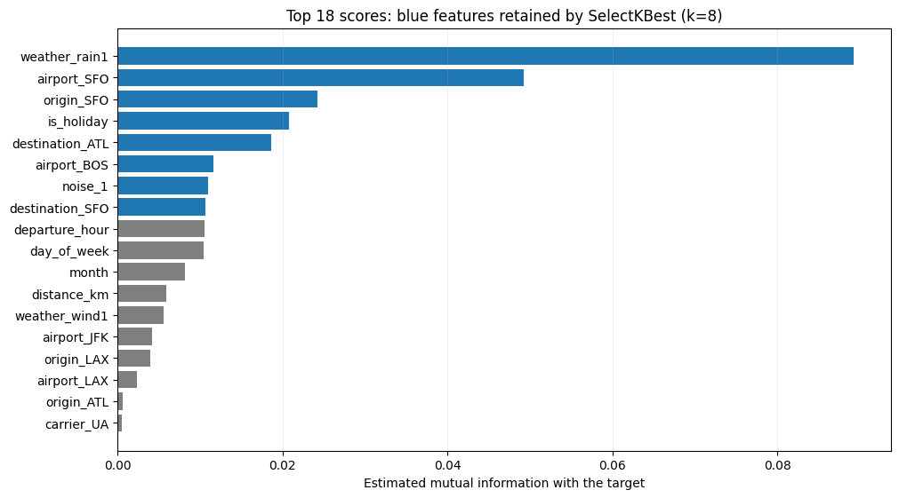
Figure 3
Compare candidate feature counts k
| k | balanced_accuracy_mean | balanced_accuracy_std | |
|---|---|---|---|
| 0 | 5 | 0.716955 | 0.015365 |
| 1 | 7 | 0.715234 | 0.015562 |
| 2 | 10 | 0.716800 | 0.015527 |
| 3 | 13 | 0.749792 | 0.034429 |
| 4 | 16 | 0.767447 | 0.027305 |
| 5 | 19 | 0.765352 | 0.026954 |
| 6 | 22 | 0.771642 | 0.034421 |
| 7 | 25 | 0.772301 | 0.034401 |
| 8 | 28 | 0.778533 | 0.028552 |
| 9 | 31 | 0.789586 | 0.020354 |
Elbow method: choose the “right” k.
Choose the point after which extra features give diminishing returns.
- A smaller model may be preferable when its accuracy loss is negligible.
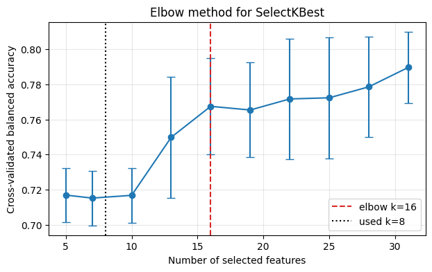
Coding break 2: Exercises 3-4 (~15 minutes)
Go to Exercises 3-4.
Automated feature selection
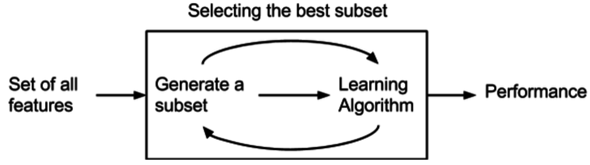
Wrapper Methods
Wrapper methods search for a subset by repeatedly fitting a model (Guyon and Elisseeff 2003).
- Wrapper methods can capture model-specific usefulness, but they are more computationally expensive. Why?
- Here we use
SequentialFeatureSelectorandRFE.
Wrapper: SequentialFeatureSelector
Forward-SFS greedily adds one feature at a time.
- Start with no features.
- Fit an estimator on each candidate feature and compare cross-validated scores.
- Keep the best candidate.
- Repeat with each remaining feature added to the selected set.
- Stop at the desired feature count.
Backward-SFS reverses the search.
- Start with all features and remove one at each step.
- In sklearn, use
SequentialFeatureSelector(direction="backward").
Python: SequentialFeatureSelector
from sklearn.feature_selection import SequentialFeatureSelector
sfs_selector = SequentialFeatureSelector(
estimator=make_tree(), n_features_to_select=8,
direction="forward", scoring="balanced_accuracy", cv=3, n_jobs=-1,
)estimator: an unfitted model to refit on each candidate subset.n_features_to_select: desired count, or a fraction between 0 and 1.direction:"forward"adds features;"backward"removes them.scoringandcv: criterion to maximize and the folds used to compare subsets;cv=3uses three folds.n_jobs=-1: use all available processors for CV.
SFS: three runs, keeping 1, 2, then 3 features
- Use a depth-2 tree.
- Try every possible feature addition; keep the one with the highest CV balanced accuracy.
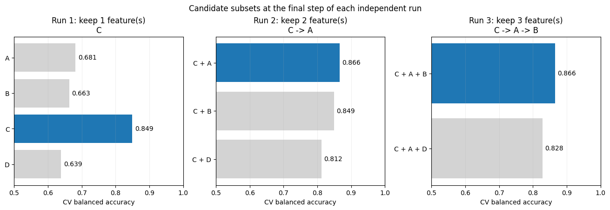
Wrapper: RFE
Recursive feature elimination (RFE) repeatedly fits an estimator and removes its least important features (Guyon et al. 2002).
- The estimator must expose feature weights or importances.
- A linear model can provide coefficients.
- A tree can provide feature importances.
- Fit the estimator on the current feature set.
- Remove the least important features, then fit again.
- Stop at the desired feature count.
Python: RFE
from sklearn.feature_selection import RFE
rfe_selector = RFE(
estimator=make_tree(), n_features_to_select=8,
step=0.2, importance_getter="auto",
)estimator: an unfitted model exposing coefficients or feature importances.n_features_to_select=8: stop with eight features.step: an integer removes that many features per iteration;0.2removes 20% of the initial count.
RFE versus backward SFS
RFE and backward SequentialFeatureSelector both remove features until the desired subset size is reached.
- RFE uses the fitted estimator’s importance signal.
- Logistic regression usually uses coefficient magnitudes; trees use feature importances.
- It asks: which feature does the fitted model consider weakest?
- Backward
SequentialFeatureSelector(SFS) compares candidate removals using balanced accuracy.- Remove the feature that gives the best cross-validated score or hurts it least.
- It asks: which feature can I remove while preserving validation performance?
- RFE is usually faster.
- Backward SFS is usually more expensive because it directly evaluates candidate subsets.
One fitted tree: what would RFE remove?
- Fit a depth-2 tree on all four features from the SFS example.
- Tree importances measure the total weighted impurity reduction from its splits.
- B is unused (importance 0), so RFE removes B first (
step=1).
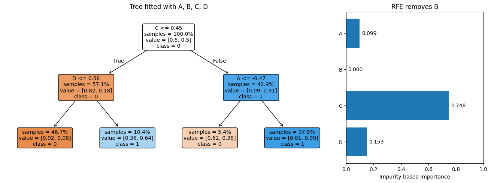
Backward elimination: refit after every candidate removal
- Same data, depth-2 tree; keep three of the four features.
- Backward SFS for each possible removal, refit the tree inside each fold and score its validation data.
- Removes D: after removing D, balanced accuracy increases.
- RFE fit the tree and score the feature relevance.
- Removes B: lowest tree importance.
All four features: CV balanced accuracy = 0.828| Remove | Tree importance | CV after removal | Change vs. all four | RFE choice | Backward SFS choice | |
|---|---|---|---|---|---|---|
| 0 | A | 0.099 | 0.812 | -0.016 | ||
| 1 | B | 0.000 | 0.828 | 0.000 | remove | |
| 2 | C | 0.748 | 0.807 | -0.021 | ||
| 3 | D | 0.153 | 0.866 | 0.037 | remove |
Compare raw, engineered, and selected feature sets
| experiment | balanced_accuracy_mean | balanced_accuracy_std | f1_mean | f1_std | selection_stability_jaccard | features_mean | features_std | fit_time_total_sec | |
|---|---|---|---|---|---|---|---|---|---|
| 4 | fe + wrapper (RFE) | 0.791320 | 0.019498 | 0.747075 | 0.023555 | 0.911111 | 8.0 | 0.0 | 0.375944 |
| 2 | fe + wrapper (SFS) | 0.790923 | 0.020552 | 0.746319 | 0.024987 | 0.447273 | 8.0 | 0.0 | 13.725425 |
| 1 | fe | 0.790393 | 0.020539 | 0.745900 | 0.024867 | NaN | 34.0 | 0.0 | 0.165460 |
| 0 | raw | 0.757657 | 0.021914 | 0.702503 | 0.027969 | NaN | 24.0 | 0.0 | 0.136364 |
| 3 | fe + filter (SelectKBest) | 0.715054 | 0.015554 | 0.669056 | 0.018518 | 0.393939 | 8.0 | 0.0 | 1.037667 |
Compare predictive performance and complexity
- Compare feature count and fit time alongside accuracy (measured times depend on the machine).
- All strategies use the same cross-validation folds.
- Error bars show the standard deviation across folds, not confidence intervals.
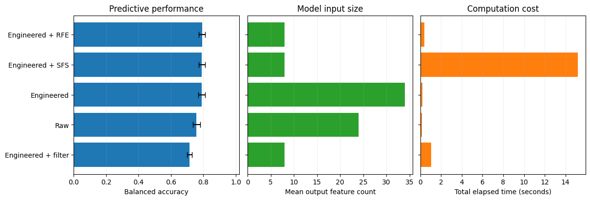
Figure 4
Selection stability across folds
If selected features change across folds, avoid drawing firm conclusions about which features matter.
| experiment | mean_jaccard_similarity | example_selected_features | |
|---|---|---|---|
| 2 | fe + wrapper (RFE) | 0.911111 | [airport_SFO, departure_hour, distance_km, is_... |
| 0 | fe + wrapper (SFS) | 0.447273 | [airport_JFK, airport_SFO, carrier_B6, departu... |
| 1 | fe + filter (SelectKBest) | 0.393939 | [airport_ATL, airport_SFO, carrier_AA, day_of_... |
Do the same features survive each fold?
- Each entry shows the fraction of folds that retained a feature.
- The chart shows the 18 features selected most often across methods.
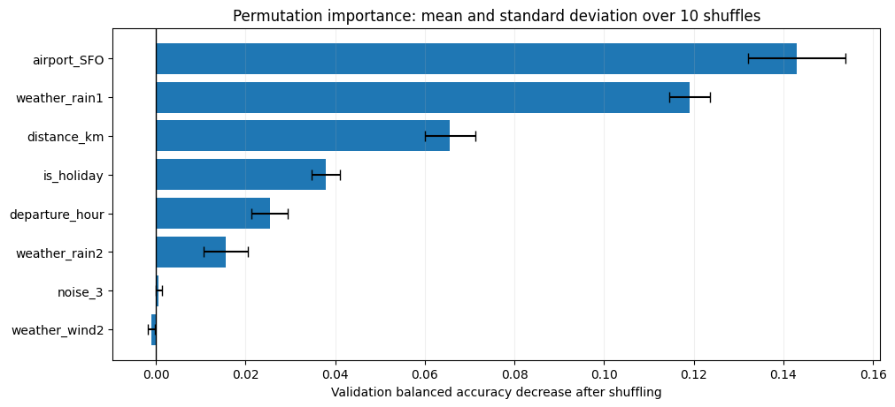
Figure 5
Interpretability check
Code
Pipeline(steps=[('feature_engineering', FlightFeatureEngineer()),
('preprocessing',
ColumnTransformer(transformers=[('num', 'passthrough',
<sklearn.compose._column_transformer.make_column_selector object at 0x7b1e497cb9b0>),
('cat',
OneHotEncoder(handle_unknown='ignore',
sparse_output=False),
<sklearn.compose._column_transformer.make_column_selector object at 0x7b1e497fbfb0>)],
verbose_feature_names_out=False)),
('feature_selection',
RFE(estimator=DecisionTreeClassifier(class_weight='balanced',
max_depth=5,
random_state=42),
n_features_to_select=8, step=0.2)),
('classifier',
DecisionTreeClassifier(class_weight='balanced', max_depth=5,
random_state=42))])In a Jupyter environment, please rerun this cell to show the HTML representation or trust the notebook. On GitHub, the HTML representation is unable to render, please try loading this page with nbviewer.org.
Parameters
Parameters
| add_manual_features | True | |
| include_actual_times | False | |
| drop_datetime | True |
Parameters
<sklearn.compose._column_transformer.make_column_selector object at 0x7b1e497cb9b0>
passthrough
<sklearn.compose._column_transformer.make_column_selector object at 0x7b1e497fbfb0>
Parameters
Parameters
DecisionTreeClassifier(class_weight='balanced', max_depth=5, random_state=42)
Parameters
Parameters
Interpretability check
Code
chosen_pipeline.fit(X_interpret_train, y_interpret_train)
selected_feature_names_for_tree = selected_feature_names_ordered(chosen_pipeline)
tree = chosen_pipeline.named_steps["classifier"]
print("Validation balanced accuracy:", round(balanced_accuracy_score(y_interpret_valid, chosen_pipeline.predict(X_interpret_valid)), 3))
pd.DataFrame({
"feature": selected_feature_names_for_tree,
"importance": tree.feature_importances_,
}).sort_values("importance", ascending=False).reset_index(drop=True)Validation balanced accuracy: 0.776| feature | importance | |
|---|---|---|
| 0 | weather_rain1 | 0.348670 |
| 1 | airport_SFO | 0.225655 |
| 2 | distance_km | 0.185170 |
| 3 | departure_hour | 0.109938 |
| 4 | is_holiday | 0.087510 |
| 5 | weather_rain2 | 0.019028 |
| 6 | weather_wind2 | 0.014674 |
| 7 | noise_3 | 0.009355 |
Plotting the tree
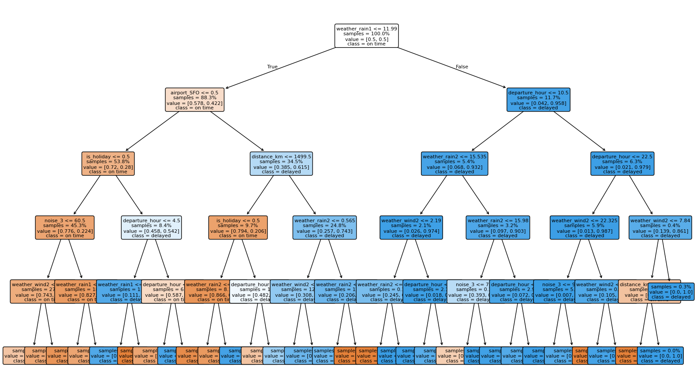
Selected does not always mean used
The tree may ignore some features retained by the selector.
- Zero importance means the fitted tree never split on that feature.

Figure 6
Permutation importance
How much does validation balanced accuracy fall when we shuffle one feature?
- Positive values indicate that shuffling hurts the score; values near zero indicate little measured effect.
from sklearn.inspection import permutation_importance
importance = permutation_importance(
tree, X_tree_valid.to_numpy(), y_interpret_valid,
scoring="balanced_accuracy", n_repeats=10,
random_state=RANDOM_STATE, n_jobs=-1,
)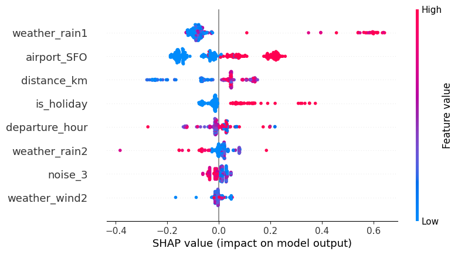
[Optional] SHAP: the contribution of each feature
SHAP assigns contributions to a prediction (Lundberg and Lee 2017; Lundberg et al. 2020).
For the delayed class (y=1), we explain the model’s prediction probability: \(\hat{P}(y=1 \mid x) = \text{base value} + \sum_{j=1}^{p} \phi_j(x).\)
- Positive contributions raise the prediction above the baseline; negative contributions lower it.
- SHAP explains the fitted model, not causal effects.
Explained 300 validation flights and 8 selected features.[Optional] Global SHAP contributions
Mean absolute SHAP values rank how much features move predictions across the explained flights.
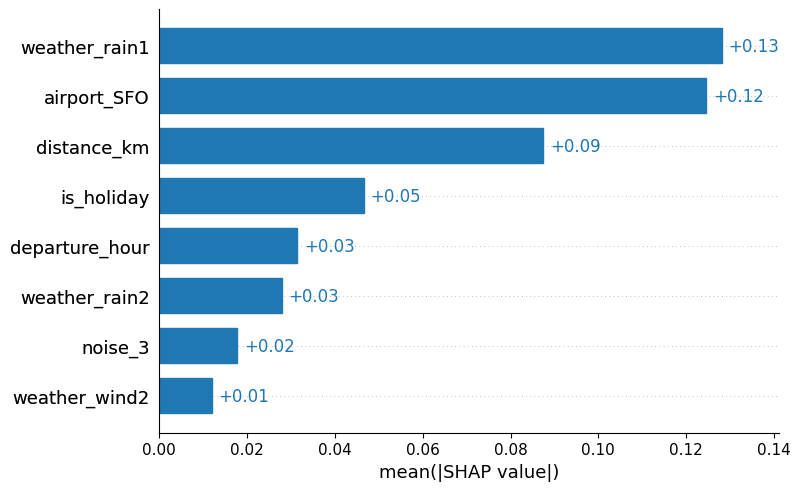
[Optional] Direction and variation across flights
Each dot in the beeswarm plot is a flight.
- Horizontal position shows the signed contribution; color shows the feature value.
- E.g., check the contribution of rain forecasts
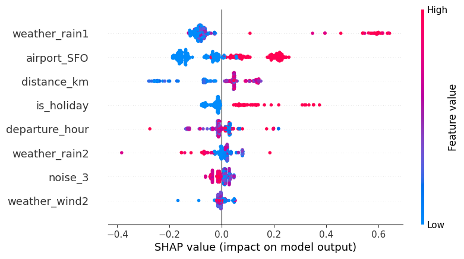
[Optional] Local SHAP contributions: explain one flight
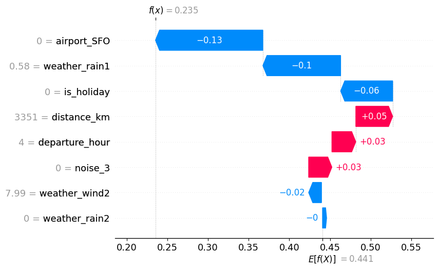
Check that the base value plus all signed contributions equals the model’s predicted probability.
| flight_index | base_probability | sum_of_contributions | reconstructed_probability | predicted_probability | |
|---|---|---|---|---|---|
| 0 | 3701 | 0.440884 | -0.205538 | 0.235346 | 0.235346 |
[Optional] Permutation importance vs SHAP
- Permutation importance measures score decrease
- SHAP measures probability-contribution magnitude.
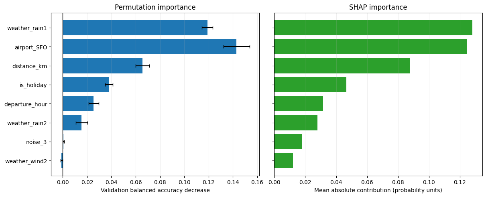
Figure 7
Coding break 3: Exercises 5-6 (~15 minutes)
Go to Exercises 5-6.
Exercise: Bike Sharing
Predict hourly bicycle rentals using the UCI Bike Sharing dataset (Fanaee-T 2013).
- Compare raw and manually engineered features.
- Compare variance/correlation filters with RFE using a decision tree.
- Use one fixed random 70/30 training/validation split, with no cross-validation.
- Complete the commented cells; solutions are hidden after each coding session’s exercises.
Download the data
Run the provided code to download hour.csv and inspect its first rows.
Code
from io import BytesIO
from urllib.request import urlopen
from zipfile import ZipFile
bike_url = "https://archive.ics.uci.edu/static/public/275/bike+sharing+dataset.zip"
with ZipFile(BytesIO(urlopen(bike_url).read())) as archive:
bike_df = pd.read_csv(archive.open("hour.csv"), parse_dates=["dteday"])
bike_df = bike_df.sort_values(["dteday", "hr"]).reset_index(drop=True)
bike_df.head()| instant | dteday | season | yr | mnth | hr | holiday | weekday | workingday | weathersit | temp | atemp | hum | windspeed | casual | registered | cnt | |
|---|---|---|---|---|---|---|---|---|---|---|---|---|---|---|---|---|---|
| 0 | 1 | 2011-01-01 | 1 | 0 | 1 | 0 | 0 | 6 | 0 | 1 | 0.24 | 0.2879 | 0.81 | 0.0 | 3 | 13 | 16 |
| 1 | 2 | 2011-01-01 | 1 | 0 | 1 | 1 | 0 | 6 | 0 | 1 | 0.22 | 0.2727 | 0.80 | 0.0 | 8 | 32 | 40 |
| 2 | 3 | 2011-01-01 | 1 | 0 | 1 | 2 | 0 | 6 | 0 | 1 | 0.22 | 0.2727 | 0.80 | 0.0 | 5 | 27 | 32 |
| 3 | 4 | 2011-01-01 | 1 | 0 | 1 | 3 | 0 | 6 | 0 | 1 | 0.24 | 0.2879 | 0.75 | 0.0 | 3 | 10 | 13 |
| 4 | 5 | 2011-01-01 | 1 | 0 | 1 | 4 | 0 | 6 | 0 | 1 | 0.24 | 0.2879 | 0.75 | 0.0 | 0 | 1 | 1 |
Inspect the data
cntis the total number of rentals in an hour.casualandregisteredsum tocnt; including them would reveal the answer.
<class 'pandas.DataFrame'>
RangeIndex: 17379 entries, 0 to 17378
Data columns (total 17 columns):
# Column Non-Null Count Dtype
--- ------ -------------- -----
0 instant 17379 non-null int64
1 dteday 17379 non-null datetime64[us]
2 season 17379 non-null int64
3 yr 17379 non-null int64
4 mnth 17379 non-null int64
5 hr 17379 non-null int64
6 holiday 17379 non-null int64
7 weekday 17379 non-null int64
8 workingday 17379 non-null int64
9 weathersit 17379 non-null int64
10 temp 17379 non-null float64
11 atemp 17379 non-null float64
12 hum 17379 non-null float64
13 windspeed 17379 non-null float64
14 casual 17379 non-null int64
15 registered 17379 non-null int64
16 cnt 17379 non-null int64
dtypes: datetime64[us](1), float64(4), int64(12)
memory usage: 2.3 MBRegression: inspect the distribution of cnt.
count 17379.0
mean 189.5
std 181.4
min 1.0
25% 40.0
50% 142.0
75% 281.0
max 977.0
Name: cnt, dtype: float64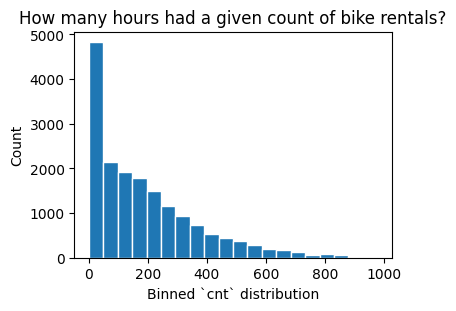
Exercise 1: use a fixed random split and manually drop some features
Prepare leakage-free predictors using one fixed training/validation split.
Which columns must be excluded, and why?
Code
# 1. Remove the row ID, date (*why*?), target, and the two leakage columns.
# Hint: bike_df.drop(columns=[???])
# Provide model-ready inputs so the baseline runs before completing the exercises.
bike_X = bike_df.drop(columns=["instant", "dteday", ]) # ...
bike_y = bike_df["cnt"]
# 2. Randomly assign 70% of observations to training and 30% to validation with random_state=42.
bike_X_train, bike_X_valid, bike_y_train, bike_y_valid = train_test_split(
bike_X, bike_y, test_size=0.30, random_state=42,
)
bike_tree_params = dict(max_depth=6, min_samples_leaf=20, random_state=42)
print(f"Training: {len(bike_X_train):,} rows; validation: {len(bike_X_valid):,} rows.")Training: 12,165 rows; validation: 5,214 rows.Exercise 2: feature engineering - encode the hour as a cycle
Why should hours 23 and 0 be close?
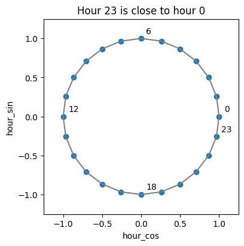
Code
# 1. A tree can learn from hr directly; cyclic features may help, but improvement is not guaranteed.
# 2. Hours 23 and 0 are adjacent, but their numeric values are far apart.
# 3. Map hour $h$ onto a circle with $\theta = 2\pi h/24$.
# 4. Add $\sin(\theta)$ and $\cos(\theta)$; together they identify the hour and preserve wraparound.
# Update the function add_bike_features(X).
def add_bike_features(X):
X = X.copy()
...
return X
# Compute angle = 2 * np.pi * X["hr"] / 24.
# Add to X hour_sin and hour_cos using np.sin(angle) and np.cos(angle).Exercise 2: feature engineering - add rush-hour indicators
Add indicators for a commuting-pattern hypothesis.
Which hours would you expect to show commuting demand?
Code
Exercise 2: feature engineering - add hour by working-day interactions
Represent hour differently for working and non-working days.
Why might explicit interactions help a depth-limited tree?
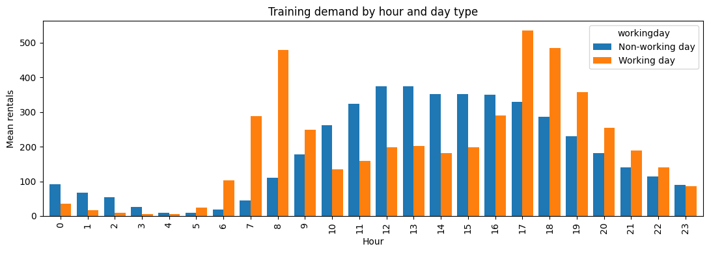
Code
# 1. The tree can already learn interactions between features; but *explicit features may help a depth-limited tree*.
# Update the function add_bike_features(X).
# Add to X hour_workday = hr * workingday.
# Add to X hour_nonworkday = hr * (1 - workingday).
# Apply the function to bike_X_train and bike_X_valid.
# Save bike_X_train_fe and bike_X_valid_fe, then inspect their added columns.
# TODO: Replace these copies with your engineered features.
# These defaults only keep the notebook executable before you complete the exercise.
bike_X_train_fe = bike_X_train.copy()
bike_X_valid_fe = bike_X_valid.copy()Coding session 1 solution
Show the solution
bike_df = bike_df.drop(columns=["instant", "dteday", "casual", "registered", "cnt"])
# Keep the supplied split's row indices and labels.
bike_X_train = bike_X.loc[bike_X_train.index].copy()
bike_X_valid = bike_X.loc[bike_X_valid.index].copy()
def add_bike_features(X):
X = X.copy()
angle = 2 * np.pi * X["hr"] / 24
X["hour_sin"], X["hour_cos"] = np.sin(angle), np.cos(angle)
X["morning_rush"] = X["hr"].between(7, 9).astype(int)
X["evening_rush"] = X["hr"].between(16, 19).astype(int)
X["hour_workday"] = X["hr"] * X["workingday"]
X["hour_nonworkday"] = X["hr"] * (1 - X["workingday"])
return X
bike_X_train_fe = add_bike_features(bike_X_train)
bike_X_valid_fe = add_bike_features(bike_X_valid)
display(bike_X_train_fe.head())Exercise 3: inspect training variances
Inspect the engineered training features for low variance.
Which features are constant or nearly constant?
Code
# 1. Calculate each engineered feature's variance with var(ddof=0) and sort it.
# 2. Which features have the smallest variance? Are any constant?
# Calculate bike_variances = bike_X_train_fe.var(ddof=0).sort_values().
# Show every feature's variance, rounded to four decimals.
# List features whose variance is <= 0.01: these will be removed.
# Compare windspeed with hr: do their different units explain their variance gap?
# Would converting a feature's units change this filter's decision?
# Code hint: bike_variances = bike_X_train_fe.var(ddof=...).sort_values()
# display(bike_variances.round(4))Exercise 4: inspect training correlations
Inspect correlated training features for redundancy.
Which feature could you remove from each strongly correlated pair?
Code
# 1. Calculate absolute Pearson correlations using bike_X_train_fe.corr().abs().
# 2. Which feature could you drop from each pair?
# 3. High correlation suggests redundancy; low correlation does not rule out nonlinear dependence.
# Calculate bike_correlations = bike_X_train_fe.corr().abs().
# Show pairs above 0.9 and propose a feature to remove.
# Hint: keep the upper triangle to exclude self-correlations and duplicate pairs.
# Code hints: correlations = bike_X_train_fe.corr().abs()
# upper = correlations.where(np.triu(np.ones(correlations.shape), k=1).astype(bool))
# pairs = upper.stack()
# display(pairs[pairs > ...])Exercise 4: compare trees with and without filters
Compare trees with and without filters on both input representations.
Does filtering improve errors or mainly reduce the number of features?
Code
# 1. Run the provided baseline comparison, then complete the filter pipeline for both raw and engineered inputs. Keep the split and tree settings fixed. Save the models and scores for coding break 3.
# 2. Chain VarianceThreshold(0.01), DropCorrelatedFeatures(threshold=0.9), and DecisionTreeRegressor(bike_tree_params).
# 3. Use the provided record_bike_model helper to fit each pipeline and record MAE, RMSE, R2, and retained feature count.
# 4. Does filtering change the error or only the number of features?
from sklearn.tree import DecisionTreeRegressor
from sklearn.metrics import mean_absolute_error, root_mean_squared_error, r2_score
def regression_metrics(y_true, y_pred):
"""Return MAE, RMSE, and R2 for observed and predicted rental counts."""
return {
"MAE": mean_absolute_error(y_true, y_pred), # Mean absolute error in rentals; lower is better.
"RMSE": root_mean_squared_error(y_true, y_pred), # Error in rentals, penalizing large misses more; lower is better.
"R2": r2_score(y_true, y_pred), # 1 is perfect, 0 matches the observed-mean baseline, negative is worse.
}
bike_models, bike_results = {}, []
bike_inputs = {
"Raw": (bike_X_train, bike_X_valid),
"Engineered": (bike_X_train_fe, bike_X_valid_fe),
}
def record_bike_model(label, model, train, valid):
model.fit(train, bike_y_train)
names = model[:-1].get_feature_names_out(train.columns)
bike_models[label] = (model, names)
bike_results.append({"Model": label, **regression_metrics(bike_y_valid, model.predict(valid)), "Features": len(names)})
# Provided baselines: focus your implementation on the filters.
for label, (train, valid) in bike_inputs.items():
baseline = Pipeline([("selection", "passthrough"), ("tree", DecisionTreeRegressor(**bike_tree_params))])
record_bike_model(f"{label} + Tree", baseline, train, valid)
# For each label, (train, valid) in bike_inputs.items():
# Create a fresh Pipeline with variance, correlation, and tree stages.
# Use record_bike_model(f"{label} + Filters", model, train, valid).
# Display pd.DataFrame(bike_results).set_index("Model").round(3).Coding session 2 solution
Show the solution
variances = bike_X_train_fe.var(ddof=0).sort_values()
display(variances.round(4))
print("Variance <= 0.01:", variances[variances <= 0.01].index.tolist())
correlations = bike_X_train_fe.corr().abs()
pairs = correlations.where(np.triu(np.ones(correlations.shape), k=1).astype(bool)).stack()
display(pairs[pairs > 0.9].sort_values(ascending=False).round(3))
for label, (train, valid) in bike_inputs.items():
model = Pipeline([
("variance", VarianceThreshold(0.01).set_output(transform="pandas")),
("correlation", DropCorrelatedFeatures(threshold=0.9)),
("tree", DecisionTreeRegressor(**bike_tree_params)),
])
record_bike_model(f"{label} + Filters + Tree", model, train, valid)
display(pd.DataFrame(bike_results).set_index("Model").round(3))Exercise 5: add RFE to the comparison
Add RFE to the saved model comparisons.
Does any error reduction justify the retained feature count?
Code
# 1. For each input representation, chain RFE(DecisionTreeRegressor(bike_tree_params), n_features_to_select=8) and a decision tree.
# 2. Use record_bike_model to add both RFE models to the four saved comparisons from coding break 2.
# 3. Compare validation errors and retained feature counts for no selection, filters, and RFE. Keep the same split and tree settings.
# For each label, (train, valid) in bike_inputs.items():
# model = Pipeline([
# ("selection", RFE(DecisionTreeRegressor(**bike_tree_params), n_features_to_select=8)),
# ("tree", DecisionTreeRegressor(**bike_tree_params)),
# ])
# Use record_bike_model(f"{label} + RFE", model, train, valid).
# Display all six comparisons using pd.DataFrame(bike_results).set_index("Model").round(3).Exercise 6: explain
Interpret the effects of feature engineering and selection.
Which changes improved validation performance, and what evidence supports your explanation?
Code
# 1. Did cyclic encoding, rush indicators, and interactions improve the tree's validation scores? Support your answer with MAE, RMSE, and R2.
# 2. Which added features are used by the tree? Nonzero importance alone does not establish a validation improvement.
# 3. Explain why engineering may have little effect when a tree can already learn the same boundaries.
# 4. Compare RFE with the filters at the same input representation: does any error reduction justify the retained feature count?
# For each label, (model, names) in bike_models.items():
# Pair model.named_steps["tree"].feature_importances_ with names in a pd.Series.
# Sort only after pairing each importance with its feature name.
# A removed feature is absent from names; a retained but unused feature has importance 0.
# Compare engineering with selection fixed, then selection with inputs fixed.
# Explain the validation errors and feature counts in bike_results.Coding session 3 solution
Show the solution
for label, (train, valid) in bike_inputs.items():
model = Pipeline([
("selection", RFE(DecisionTreeRegressor(**bike_tree_params), n_features_to_select=8)),
("tree", DecisionTreeRegressor(**bike_tree_params)),
])
record_bike_model(f"{label} + RFE + Tree", model, train, valid)
display(pd.DataFrame(bike_results).set_index("Model").round(3))
importances = {}
for label, (model, names) in bike_models.items():
importances[label] = pd.Series(model.named_steps["tree"].feature_importances_, index=names)
display(pd.DataFrame(importances).round(3))References
Fanaee-T, Hadi. 2013. Bike Sharing. UCI Machine Learning Repository. https://doi.org/10.24432/C5W894.
Guyon, Isabelle, and André Elisseeff. 2003. “An Introduction to Variable and Feature Selection.” Journal of Machine Learning Research 3: 1157–82. https://www.jmlr.org/papers/v3/guyon03a.html.
Guyon, Isabelle, Jason Weston, Stephen Barnhill, and Vladimir Vapnik. 2002. “Gene Selection for Cancer Classification Using Support Vector Machines.” Machine Learning 46: 389–422. https://doi.org/10.1023/A:1012487302797.
Lundberg, Scott M., Gabriel Erion, Hugh Chen, et al. 2020. “From Local Explanations to Global Understanding with Explainable AI for Trees.” Nature Machine Intelligence 2 (1): 56–67.
Lundberg, Scott M., and Su-In Lee. 2017. “A Unified Approach to Interpreting Model Predictions.” Advances in Neural Information Processing Systems 30.